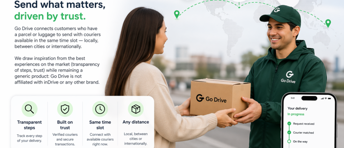

Une plateforme pensée comme les apps de mobilité : simple, lisible, centrée sur l’expéditeur et le livreur.

Go Drive met en relation des clients qui ont un colis ou des bagages à envoyer avec des livreurs disponibles sur le même créneau — en local, entre villes ou à l’international.
Nous nous inspirons des meilleures expériences du marché (transparence des étapes, confiance) tout en restant un produit générique : Go Drive n’est pas affilié à inDrive ni à aucune autre marque.